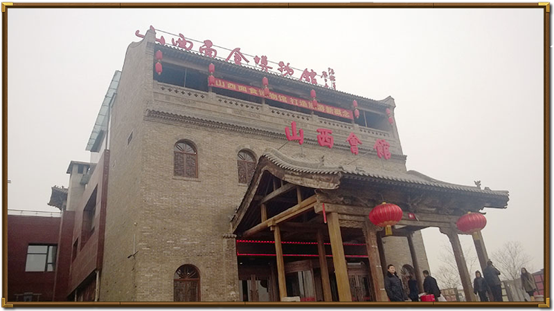

您现在的位置 面面俱到->文化研究->现代发展
现代发展


面食文化是山西的珍宝，在现代发展中，也成为了山西走向全国，走向世界的重要实力之一。在我的调查中，我发现外地人对山西面食的认知程度和评价都很高。面食文化的地位已经超过了山西远近闻名的煤炭资源，这对山西未来的发展无疑是一件好事。面食文化的发展是走向越来越丰富，而煤炭资源的发展却是发展一点少一点储备。况且，在山西经济转型的现代，面食文化更是成为了山西的代表产业之一。
在面食食制作的过程中，为了追求节省时间、操作简单，“踢尖”便应运而生，“踢尖”也称“拨鱼儿”，“踢尖”对于面团的成型没有特殊要求，与适量的水搅拌成型，便可开始制作。“踢尖”这种面食的制作以快取胜。随之“剪刀面”的出现，进一步加快了面食制作的速度。剪刀面是用剪刀将面团剪成一条一条均匀的条状。
1984年，日本明星食品株式会社社长八原昌元先生实地考察完晋中的面食以后，终于说出了一句石破天惊的话：“我们深深地感到，世界面食在中国，中国面食在山西，山西的面食看晋中。” 由此，就这样一步步奠定了山西面食在中国乃至世界的坚固地位，使其名扬天下。同时也将山西人民在面食中蕴含着的深刻情感传递到了世界的各个角落。
另外，在我研究性学习的过程中也对面食文化未来的发展提出了畅想，将在《未来畅想》中阐述。
-Large.png)
山西省面食博物馆-山西会馆，是一个及餐饮与文化一身的现代型面食馆，里面不仅有面食，还有面艺表演，不过我因为时间原因没能拍摄到。

-Small.png "点击查看详情")
-Small.png "点击查看详情")
-Small.png "点击查看详情")